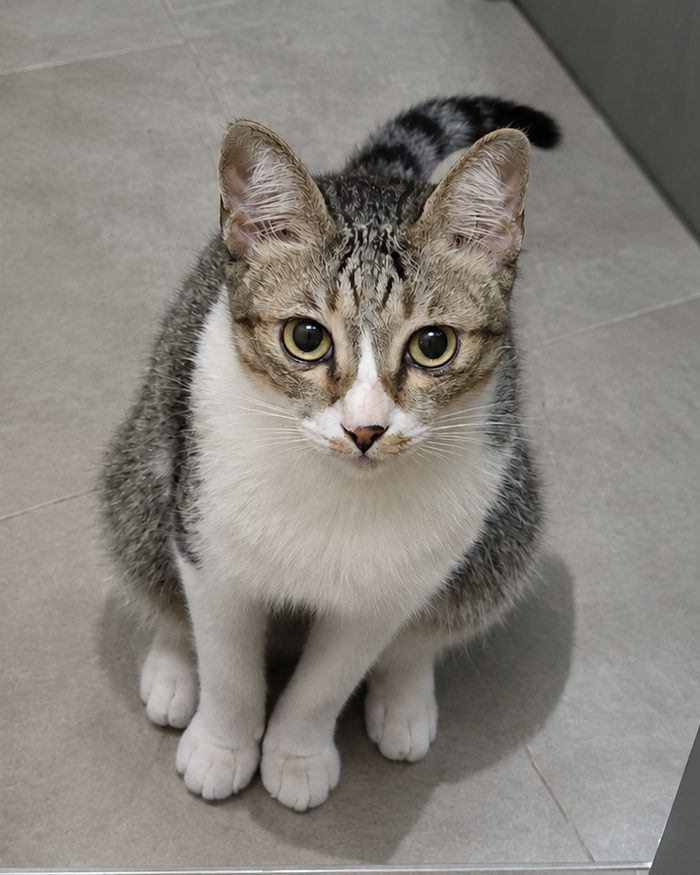

Applied AI & Analytics · Singapore Polytechnic
Yue Liang
Thawdar Lin Wai
Reading the micro-expressions of numbers.
Year 2 student looking for data analyst and AI engineering internships. I build dashboards and models that end in a decision someone can act on.
01 / Selected work
What the numbers said.
Twelve projects across data analytics, machine learning and web development. Open a card to see the problem, what I did and the result.
02 / About

Hi, I'm Yue Liang.
Thawdar Lin Wai
As a kid, I asked a lot of "why" questions. Why this much? What does this mean? I still do, just with data now.
I like finding answers that aren't written down anywhere, a bit like reading the micro-expressions of numbers. I'm a Year 2 Applied AI & Analytics student at Singapore Polytechnic, looking for an internship in data analytics or AI engineering where the work actually gets used.
Outside of data, I'm usually doing makeup or hanging out with Dashi, my cat, who asks as many questions as I do.

Education
Apr 2025 to Apr 2028 (expected)
Fundamentals of Computing
Competitions
Skills
03 / Contact